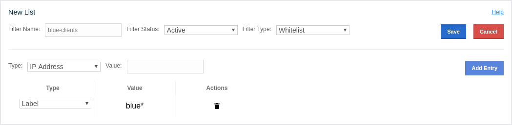
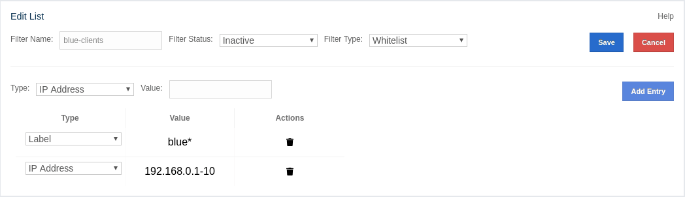

Monitoring Clients
You can use the Clients menu item to monitor all the clients that are connected to your Hazelcast cluster.
Only basic information for clients, like client instance
name, address, type and labels, is shown by default. The
values for
other fields are shown as N/A. As a prerequisite for
seeing the full information, you need to enable the client
statistics before starting your clients. This can be done
by setting the hazelcast.client.statistics.enabled system
property to true on the client. Please see the
Client System Properties section
in the Hazelcast IMDG Reference Manual for more information.
After you enable the client statistics, you can monitor your
clients using the Management Center.
You can see a list of all the clients in your cluster by clicking on the Clients menu item on the left panel. A new page is opened on the right, as shown below. The page has two tabs: Connection and Filter. The Connection tab is opened by default. This tab shows the list of all the clients. See the Changing Cluster Client Filtering section for the Filter tab’s description.

By default, hostname of the client is shown in the address column. You can change it to show its IP address or its canonical hostname instead by using the Address Type combo box. Note that this will also cause the client details page to show the IP address or the canonical hostname.
You can filter the clients shown and you can also sort the table by clicking on the column headers. Clicking on a client name will open a new page for monitoring that client on the right, as shown below.

The Heap Memory Utilization chart shows the memory usage
on the selected client with three different metrics
(maximum, used and total memory) represented by different colors. You can open this
chart as a separate window using the  button placed at top right of it; this gives you a
clearer view of the chart.
button placed at top right of it; this gives you a
clearer view of the chart.
General is a dynamically updated window tab showing general information about the client. Below are brief explanations for each piece of information:
-
Name: Name of the client instance.
-
Address: Local IP address of the client that is used for connecting to members.
-
Type: Type of the client.
-
Enterprise: Yes, if the client is an Hazelcast IMDG Enterprise client.
-
Member Connection: Shows to which member a client is currently connected to. Please note that ALL means a client is configured so that it might connect to all members of a cluster, i.e., it might not have a connection to all members all the time.
-
Version: Version of the client.
-
Last Connection to Cluster: Time that the client connected to the cluster. It is reset on each reconnection.
-
Last Statistics Collection: Time when the latest update for the statistics is collected from the client.
-
User Executor Queue Size: Number of waiting tasks in the client user executor.
-
Labels: List of client labels (as defined by the client).
Next to the General tab, the Runtime tab shows the processor number, uptime, and maximum, total and free memory sizes of the selected client. These values are collected from the default MXBeans provided by the Java Virtual Machine (JVM). Descriptions from the Javadocs and some explanations are below:
-
Number of Processors: Number of processors available to the client (JVM).
-
Up Time: Uptime of the client (JVM).
-
Maximum Memory: Maximum amount of memory that the client (JVM) will attempt to use.
-
Total Memory: Amount of total heap memory currently available for current and future objects in the client (JVM).
-
Free Memory: Amount of free heap memory in the client (JVM).
-
Used Memory: Amount of used heap memory in the client (JVM).
Next to the Runtime tab, the OS tab shows statistics about the operating system of the client. These values are collected from the default MXBeans provided by the Java Virtual Machine (JVM). Descriptions from the Javadocs and some explanations are below:
-
Free Physical Memory: Amount of free physical memory.
-
Committed Virtual Memory: Amount of virtual memory that is guaranteed to be available to the running process.
-
Total Physical Memory: Total amount of physical memory.
-
Free Swap Space: Amount of free swap space. Swap space is used when the amount of physical memory (RAM) is full. If the system needs more memory resources and the RAM is full, inactive pages in memory are moved to the swap space.
-
Total Swap Space: Total amount of swap space.
-
Maximum File Descriptor Count: Maximum number of file descriptors. File descriptor is an integer number that uniquely represents an opened file in the operating system.
-
Open File Descriptor Count: Number of open file descriptors.
-
Process CPU Time: CPU time used by the process on which the member (JVM) is running.
-
System Load Average: System load average for the last minute. The system load average is the average over a period of time of this sum: (the number of runnable entities queued to the available processors) + (the number of runnable entities running on the available processors). The way in which the load average is calculated is operating system specific but it is typically a damped time-dependent average.
| Some of the Runtime/OS statistics may not be available for your client’s JVM implementation/operating system. N/A is shown for these types of statistics. Please refer to your JVM/operating system documentation for further details. |
The Client Near Cache Statistics table shows statistics related to the Near Cache of a client. There are two separate tables; one for maps and one for caches.
-
Map/Cache Name: Name of the map or cache.
-
Creation Time: Creation time of this Near Cache on the client.
-
Evictions: Number of evictions of Near Cache entries owned by the client.
-
Expirations: Number of TTL and max-idle expirations of Near Cache entries owned by the client.
-
Hits: Number of hits (reads) of Near Cache entries owned by the client.
-
Misses: Number of misses of Near Cache entries owned by the client.
-
Owned Entry Count: Number of Near Cache entries owned by the client.
-
Owned Entry Memory Cost: Memory cost of Near Cache entries owned by the client.
-
LP Duration: Duration of the last Near Cache key persistence (when the pre-load feature is enabled).
-
LP Key Count: Number of Near Cache key persistences (when the pre-load feature is enabled).
-
LP Time: Time of the last Near Cache key persistence (when the pre-load feature is enabled).
-
LP Written Bytes: Written number of bytes of the last Near Cache key persistence (when the pre-load feature is enabled).
-
LP Failure: Failure reason of the last Near Cache persistence (when the pre-load feature is enabled).
Please note that you can configure the time interval for which
the client statistics are collected and sent to the cluster,
using the system property hazelcast.client.statistics.period.seconds.
See the
System Properties section
in the Hazelcast IMDG Reference Manual for more information.
|
Changing Cluster Client Filtering
| The Filter tab is only available with Hazelcast IMDG license that includes the Cluster Client Filtering feature. |
The Filter tab includes Cluster Client Filtering status, Cluster Client Filter Settings and Client Filtering Lists sections.
The Cluster Client Filtering status section describes if there is a deployed client filtering list available to all cluster members (Enabled status), or if the feature is disabled for the cluster and the members allow any clients (Disabled status).
The Cluster Client Filter Settings section allows to specify the status of the feature and the filtering type and to deploy any modifications made in client filtering lists to the deployed list available to all cluster members. On the deploy action the following happens:
-
If the status to be deployed is Disabled, the deployed client filtering list available to all cluster members is cleaned up and the members start allowing any client to connect.
-
If the status to be deployed is Enabled, all entries of the matching lists from the Client Filtering Lists section are copied into the deployed client filtering list and applied to all cluster members. Matching lists are selected by their status (List Status must be Active) and type (List Type must match the value of the Client Filter Type selection).
Once a cluster member receives the deployed client filtering list from the Management Center, it immediately applies the list to all currently connected clients and then uses it for newly connecting clients. Blacklisted clients may connect to another cluster if they are configured to support blue-green deployment. Please see the Blue-Green Deployment and Disaster Recovery section in the Hazelcast IMDG Reference Manual for more information.
| If some of the cluster members are not reachable from the Management Center, those members keep using the last client list applied to them. |
The deploy action in the Cluster Client Filter Settings section is available by clicking on the Deployed/Deploy Changes button. This button also describes if there were any changes in client filtering lists that would lead to changes in the deployed client filtering list as the result of the deploy (Deploy Changes label), or there were no such changes (Deployed label).
The Client Filtering Lists section allows creation, editing and deletion of the client filtering lists. To create a new client filtering list, you need to click the Add New List button, which will open the Create List form, as shown below. Once you enter all fields and entries for the new list, click the Save button to save your modifications.

The following formats of list entry values are supported:
-
For the IP Address entry type you can specify IP address (IPv4 or IPv6) with optional range characters (
*and-) instead of any byte group. For instance,10.3.10.*refers to IPs between10.3.10.0and10.3.10.255. The10.3.10.4-18refers to IPs between10.3.10.4and10.3.10.18(4 and 18 included). -
For the Label entry type you can specify any string with optional wildcard characters (
*). For instance,green*refers to any label values that start with thegreenstring. -
For the Instance Name entry type you can specify any string with optional wildcard characters (
*). For instance,*-clientrefers to any label values that end with the-clientstring.
To modify an existing client filtering list, you need to click the Edit button, which will open the Edit List form, as shown below.

To delete an existing client filtering list, you need to click the Delete button and confirm your action in the opened dialog.
| Any modifications made in the Client Filtering Lists section will become available to members only after the deploy action. |